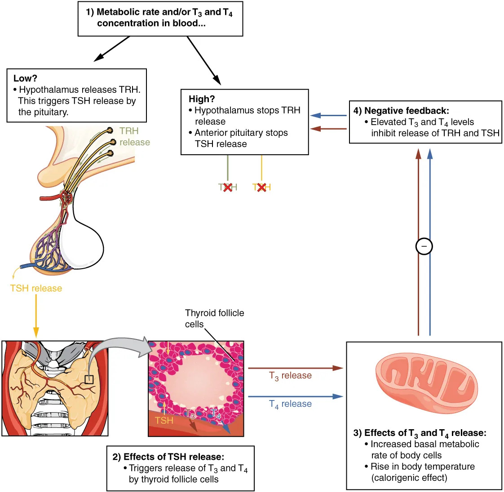

体液调节是指体内某些化学物质（如激素、CO₂等）通过体液的传送对人和动物体的生理活动所进行的调节。最主要方式就是激素调节。
动物激素的特点：种类多、特异性高、有专门的产生和分泌激素的器官。
研究方法：①切除所研究的器官或组织；②移植同一器官或组织；③分离出化学物质注射。
激素分为含氮激素和脂类激素（类固醇激素）两大类。
含氮激素包括：①肽类和蛋白质激素（下丘脑调节肽、腺垂体激素、胰岛素、胰高血糖素、甲状旁腺素等）；②氨基酸衍生物（肾上腺素、去甲肾上腺素、甲状腺激素T₃/T₄）。
类固醇激素：皮质醇、醛固酮、雌性激素、雄激素、孕激素等，均由胆固醇经过一系列酶促反应合成。贮存形式就是胆固醇的胞内贮存。
合成路径：肽类激素——附着核糖体合成→粗面内质网→高尔基体（酶解、糖基化）→包装于分泌颗粒→待命胞吐（直接刺激是胞质Ca²⁺浓度升高）。儿茶酚胺——酪氨酸→多巴→多巴胺→去甲肾上腺素→肾上腺素（限速酶：酪氨酸羟化酶）。甲状腺激素——甲状腺球蛋白碘化→DIT/MIT→缩合→T₄/T₃。
激素释放：具有周期性和阶段性，大多数激素释放是短时间内突然发生的。结合型激素无活性，须转变为游离型才具有生理作用。大多数激素半衰期只有几十分钟，只有甲状腺素达数天。
激素的主要生理作用：①调节蛋白质、糖类、脂肪和水盐等物质代谢；②影响细胞分裂与分化；③促进或抑制神经系统发育和活动；④促进生殖器官发育与成熟；⑤调节能量代谢与转换；⑥调节行为。
激素作用特点：①激素与靶细胞受体之间的特异性；②信号放大——血液中激素浓度极低（10⁻¹²～10⁻⁹ mol/L）；③反馈调节——负反馈是调节激素释放的主要形式；④多功能效应。
激素到达靶细胞的途径：①内分泌（远距离分泌，经血液运输）；②旁分泌（经组织液扩散，如生长抑素）；③自分泌（返回作用于自身）；④腔分泌（如胃泌素分泌入胃肠腔）；⑤神经分泌（神经元合成，从神经末梢释放）；⑥内在分泌（肽类激素或生长因子直接作用于细胞内靶分子）。
激素作用机制：含氮激素与膜受体结合→G蛋白→第二信使（cAMP、Ca²⁺等）→蛋白激酶→生理效应。类固醇激素进入细胞→与胞内受体结合→进入细胞核→调节基因表达。
1. 甲状腺激素（T₃和T₄，T₃效能远高于T₄）：①促进能量代谢——加速糖和脂肪氧化分解，增加耗氧量和产热量（甲亢患者基础代谢率增高，喜凉怕热）；②对三大物质代谢——促进糖吸收、促进胆固醇合成但更加速其降解（净降胆固醇）、促进蛋白质合成（正常浓度）或分解（过量时）；③促进生长发育——长骨生长、神经元树突和轴突形成（出生4个月内婴儿甲低导致呆小症）；④提高中枢神经系统兴奋性；⑤调节其他激素作用。
甲状腺机能调节：TRH（下丘脑）→TSH（腺垂体）→甲状腺激素。负反馈调节——甲状腺激素浓度增高时抑制腺垂体TSH分泌。缺碘→甲状腺激素合成减少→负反馈减弱→TSH分泌增加→甲状腺增生→地方性甲状腺肿。

2. 胰岛素：由胰岛B细胞分泌，促进合成代谢（降低血糖、促进糖原合成、促进脂肪合成、促进蛋白质合成）。
3. 胰高血糖素：由胰岛A细胞分泌，促进分解代谢。血糖浓度降低时分泌增加，促进肝糖原分解和糖异生、促进脂肪分解和脂肪酸氧化。
4. 肾上腺皮质激素：
5. 肾上腺髓质激素：肾上腺素和去甲肾上腺素，构成交感-肾上腺髓质系统，产生"应急反应"——促进肝糖原及脂肪分解、提高血糖和游离脂肪酸。去除肾上腺髓质动物仍能生活（交感神经系统有类似功能），去除肾上腺皮质动物就会死去。
6. 生长激素（GH）：促进骺软骨和肌肉生长（幼年不足→侏儒症，幼年过多→巨人症，成年过多→肢端肥大症）。调节蛋白质合成、脂肪分解、抑制葡萄糖消耗→血糖升高。分泌受GHRH和GHIH双重调节。
7. 催乳素（PRL）：促进乳腺发育和泌乳，促进性腺发育和性激素合成。PRL与雌激素和孕酮有共同受体，妊娠时不泌乳而分娩后才泌乳（因孕酮和雌激素水平下降解除了对PRL受体的竞争）。
8. 升压素（ADH）与催产素（OXT）：均由下丘脑视上核和室旁核合成，神经垂体释放。ADH——增加肾集合管水通道，促进水重吸收；失血时有一定升压作用。OXT——乳腺泡周围肌上皮细胞收缩→射乳反射；促进子宫收缩（正反馈）。
脊椎动物主要激素与三大物质代谢的关系：
| 激素 | 蛋白质 | 脂肪 | 血糖 | 肝糖原 | 糖异生 |
|---|---|---|---|---|---|
| 胰岛素 | 合成 | 脂肪细胞合成 | 降低 | 合成 | 降低 |
| 甲状腺激素 | 合成 | 分解 | 分解 | 分解 | 升高 |
| 胰高血糖素 | 促进分解（提供糖异生原料） | 促进分解 | 升高 | 分解 | 升高 |
| 糖皮质激素 | 分解 | 分解 | 升高 | 分解 | 升高 |
| 肾上腺素 | 分解 | 分解，尤其四肢 | 升高 | 分解 | 升高 |
| 生长激素 | 合成 | 分解 | 升高 | 分解 | 升高 |
下丘脑-垂体系统：下丘脑"促垂体区"分泌9种调节肽通过垂体门脉系统调节腺垂体活动。下丘脑视上核和室旁核分泌升压素和催产素，经轴突运输至神经垂体储存释放。
其他内分泌激素：前列腺素（PG，20C不饱和脂肪酸，全身各组织细胞均可产生）、松果体激素（褪黑激素，抑制性腺活动，有利于睡眠）、胸腺素（胸腺分泌，儿童期活跃，20岁开始退化，45岁后萎缩，诱导T细胞成熟分化）。
昆虫激素分为内激素和外激素（信息素）。无脊椎动物激素大多由神经系统分泌。
内激素三种：①脑激素（促前胸腺激素，PTTH）——由脑神经分泌细胞分泌，贮存于心侧体；②蜕皮激素——由前胸腺分泌，含量增加到一定水平引起蜕皮；③保幼激素——由咽侧体分泌，保持幼虫性状而抑制成虫性状出现。
保幼激素多+蜕皮激素少→蜕皮后仍是幼虫；保幼激素减少+蜕皮激素增多→蜕皮后成为蛹；蛹内无保幼激素→蛹蜕皮后变为成虫；成虫前胸腺退化消失→不再蜕皮。
外激素（信息素）：同种昆虫个体间的化学通信物质，包括性外激素、性抑制外激素、告警外激素、追踪外激素和聚集外激素。